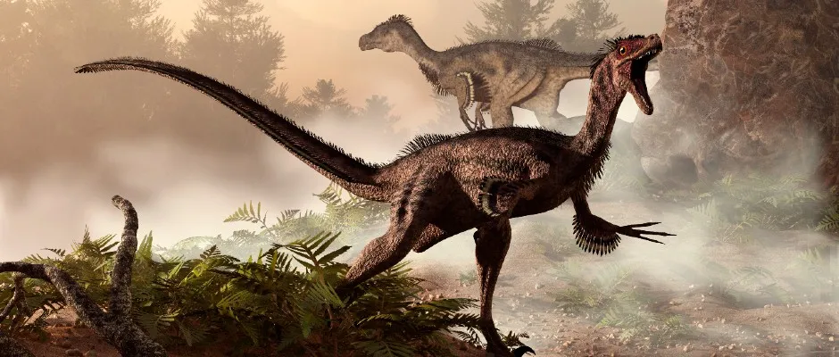

Dinosauri
Dinosauri su fascinantne drevne životinje koje su živjele prije mnogo milijuna godina.
Moji omiljeni dinosauri su spinosaurus, velociraptor i triceratops.
Top 3 dinosauri
-
Spinosaurus - omiljeni
Spinosaurus je bio najveći mesožder među dinosaurima, poznat po svojoj jedrenjači na leđima i poluvodenom načinu života.

-
Velociraptor
Velociraptor je bio brz i inteligentan predator, poznat po svom oštrom kljunu i lovu u grupama. 
-
Triceratops
Triceratops je bio biljojed s tri velika roga na glavi i zaštitnim štitom.